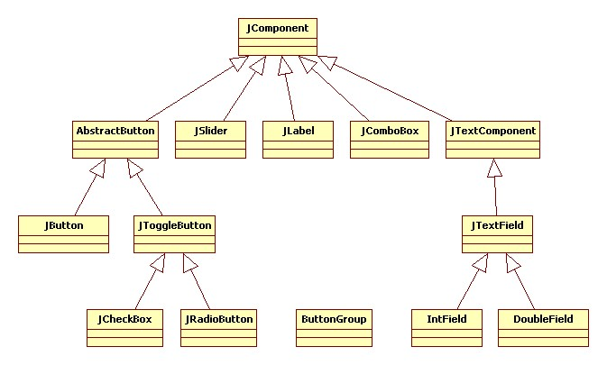

Swing
Programs with graphical user interfaces (GUI) are the topic of this chapter. Similar to graphic programs, there are ready-made components with which we can build small and large programs. It's a bit like Lego. In addition, we will learn some more about instance variables.
.
 Graphical User Interface
Graphical User Interface
Most of the programs we deal with every day are programs with a graphical user interface (GUI or UI). GUIs consist of graphical elements, which we also call widgets or interactors, because we can interact with them. Well-known examples are:
- Labels
- Buttons
- Textfields
- Checkboxes
- Radiobuttons
- Comboboxes
In the following we will see how to use them.
.
.
JSLabel
We start again very simple, with the JSLabel. There is practically no difference to the Glabel we already know. It is used to display text in GUI programs:
function setup() {
createGUI(300, 150);
let dt = new Date();
print(dt.toLocaleString());
let fritz = new JSLabel(dt.toLocaleString());
fritz.addStyle('font: 15px monospace;');
addWidget(fritz);
}
We see two differences to our previous programs: we now write createGUI() instead of createCanvas(). And we use mostly the setup() function, the draw() we will hardly use. Furthermore we see for the first time the class Date. This is very practical when you need date or time. If you are familiar with CSS, then the content of the addStyle() method should look familiar to you.
.
JSButton
The JSLabel is not very interactive, and doesn't really deserve to be called an 'interactor'. That is different for the JButton, because you can click on it with the mouse. We'll start again very simple:
function setup() {
createGUI(300, 150);
setLayout('border');
let btn = new JSButton("OK");
addWidget(btn, 'SOUTH');
}
We create a new JSButton, on which "OK" should be written. We'll add that to the south of our program. When we start the program, we can press the button, but nothing happens.
For the button to work properly, that is, to become interactive, we have to implement the actionPerformed() function. It is like the Hollywood principle: don't call us, we'll call you. This is like with mouse events, if you remember. But instead of the mousePressed(), now the function actionPerformed() is being called. This means that every time someone presses the button, this function is called.
function actionPerformed(ev) {
print("hi:" + ev.getActionCommand());
}
Now every time we press on the button with the mouse, in the console part of our program "hi:" together with the buttons name is being displayed.
.
 Regions
Regions
In the two examples above, we have already used regions, NORTH and SOUTH. In total, there are three regions: SOUTH, NORTH, and CENTER. We can insert our widgets into any one of these regions.
.
.
.
.
JSTextField
Using the JSTextField widget we can read text and numbers. In the following example, we want the users to log in with their names:
let tf;
function setup() {
createGUI(300, 150);
setLayout('border');
let lbl = new JSLabel("Name: ");
addWidget(lbl, 'SOUTH');
tf = new JSTextField(10);
addWidget(tf, 'SOUTH');
let btn = new JSButton("Login");
addWidget(btn, 'SOUTH');
}
function actionPerformed(ev) {
print("Name: " + tf.getText());
}
We create a JSLabel, a JSTextField and a JSButton. The constructor of the JSTextField needs to know how wide the field should be. It is also important that the JSTextField variable tf is a global variable. If it were a local variable, then we could not access it in the actionPerformed() function.
.
Global Variables
We have mentioned global variables briefly in the last chapters. The above example nicely shows what global variables are actually good for: they allow information to be exchanged between different functions. Up to now we could do this only by using parameters and return values.
Another reason why global variables can be very practical is that all local variables are deleted when a function is exited. For example, in the rollTheDie() function,
function rollTheDie() {
let rgen = new MyRandomGenerator();
let dieRoll = rgen.nextInt(1,6);
println(dieRoll);
}
a new random generator is created each time the function is called and then it is deleted again when the function is exited. Both take time. But if we create the RandomGenerator as a global variable,
let rgen = new MyRandomGenerator();
function rollTheDie() {
let dieRoll = rgen.nextInt(1,6);
println(dieRoll);
}
it is created only once, and in addition we can use it in any function of our class. This is much more resource-saving.
.
Functions and Methods
We have been using the words function and method, and it maybe a little confusing what the difference is. It is actually very easy:
async function setup() {
...
let hansel = new Student("Hänschen", 12345, 0.0);
println(hansel.name);
...
}
function rollTheDie() {
...
}
class Student {
constructor(_name, _id, _credits) {
...
}
incrementCredits(_credits) {
...
}
toString() {
...
}
}
When a function belongs to a class, it is called a method. In the above example, constructor(), incrementCredits() and toString() are methods, because they belong to the class Student. Also in Math.random() or GRect.setColor(), both random() and setColor() are methods, because they belong to a class.
Conversely, setup() and rollTheDie() are functions, because they do not belong to any class. Also, println() and readLine() are functions, they also do not belong to any class.
.
Global Variables vs Instance Variables vs. Locale Variables
Confucing may also be the difference between the three types of variables we have been using: global, instance and local variables. Consider this example:
let rgen = new MyRandomGenerator();
async function setup() {
...
let hansel = new Student("Hänschen", 12345, 0.0);
...
}
class Student {
constructor(_name, _id, _credits) {
this.name = _name;
...
let local = 5;
}
}
Global variables are declared outside of any functions, like rgen above. They can be accessed from anywhere, and they live forever.
Instance variables are declared in the constructor of a class and and always belong to a class or an object, like name in the above example. They are visible inside the entire class and all its methods, and they live as long as the object they belong to exists.
Conversely, local variables are declared within a method or function, can only be accessed within this function, and are deleted when leaving the function. In the above example hansel is a local variable, as is local. Also parameters to functions or methods are considered to be local variables.
Now the question arises, when do we use which? The answer is relatively simple in most cases:
- if it is a calculation that can be performed locally in a method, then local variables are used, e.g. the conversion from degrees to fahrenheit is a local calculation,
- if an information is used in several methods, we should use an instance variable, if all those methods belong to the same class.
- if we are dealing with an internal state of an object, we should use an instance variable. For example, in the Student class, the name, ID and credits were internal states.
SEP: If possible, use local variables.
.
Exercise: OKCancel
As a little exercise we add a cancel button to our program. How can we tell which of the two buttons was pressed? One way to do this is to use the getSource() method of the ActionEvent,
let btn1 = new JSButton("OK");
...
function actionPerformed(ev) {
if (ev.getSource() === btn1) {
print("source: btn1");
} else if (ev.getSource() === btn2) {
print("source: btn2");
} else {
print("unknown source");
}
}
to distinguish between several buttons or widgets in general. In this case the buttons or widgets must be instance variables.
.
JSCheckBox
Next we will consider the JSCheckBox widget: we use check boxes when we have several choices.
let topping1;
function setup() {
...
topping1 = new JSCheckBox("Tomatoes");
addWidget(topping1, 'CENTER');
let topping2 = new JSCheckBox("Bacon");
addWidget(topping2, 'CENTER');
let topping3 = new JSCheckBox("Onions");
addWidget(topping3, 'CENTER');
}
In the pizza example, we want to be able to select all possible combinations of toppings. This can best be achieved with check boxes. To determine which toppings were selected, there is the method isSelected():
function actionPerformed(ev) {
print("source: " + ev.getSource().isSelected());
if (ev.getSource() === topping1) {
print("Tomatoes:" + topping1.isSelected());
}
}
We have to do that for all three toppings, of course.
.
JSRadioButton
Radio buttons are used when making decisions. Let's look at the following example:
let yes;
let no;
function setup() {
...
yes = new JSRadioButton("Yes");
yes.setSelected(true);
addWidget(yes, 'SOUTH');
no = new JSRadioButton("No");
addWidget(no, 'SOUTH');
}
Here we have two radio buttons, where the "yes" button is preselected. Radio buttons belong together in the sence that only one of the buttons can be selected at a time. If you want to know which button the user has selected, you can do this using:
let b = yes.isSelected();
.
JSComboBox
As an example for the JSComboBox we look at the example FavoriteColor. It is about selecting a color from a list:
let colorPicker;
function setup() {
...
colorPicker = new JSComboBox();
colorPicker.addItem("Red");
colorPicker.addItem("White");
colorPicker.addItem("Blue");
addWidget(colorPicker, 'NORTH');
}
function actionPerformed(ev) {
println("Color:" + colorPicker.getSelectedItem());
}
In the init() method we initialize the colorPicker with the preset colors. To determine which color the user has selected, there is the getSelectedItem() method. But to access them in the actionPerformed() method, colorPicker must be an instance variable.
Note: if we closely observe the behavior of the JSComboBox, we will notice that it has some small quirks. There's nothing we can do about it.
.
UI Interactor Hierarchy
Similar to the hierarchy of the ACM graphics classes, there is also a hierarchy with the UI interactor classes. The most important ones are summarized in the following diagram, but there are many more:

.
 Layout
Layout
We already learned about the different regions SOUTH, NORTH, and CENTER. Those are a special feature of the BorderLayout. There are several other layouts besides the BorderLayout. Layouts are about how to "layout" several widgets on the screen. The following are some of the more important layouts:
- BorderLayout: here there are three regions and widgets must be explicitly assigned to a region.
- FlowLayout: is the simplest layout, widgets are simply laid out side by side from left to right.
- GridLayout: the available space is divided into equally separated rows and columns, e.g. 3 by 2.
Let's look at a few examples. To use the BorderLayout we would use the following code:
setLayout('border');
addWidget(new JSButton("0"), 'NORTH');
addWidget(new JSButton("1"), 'SOUTH');
...
For the FlowLayout the code looks like this:
setLayout('flow');
addWidget(new JSButton("0"));
addWidget(new JSButton("1"));
...
and the GridLayout is used in this fashion:
setLayout('grid', 2);
addWidget(new JSButton("0"));
addWidget(new JSButton("1"));
...
The following depicts how the different layouts look graphically:
.
JSPanel
What the GCompound was for graphics programs is the JSPanel for UI programs: it allows us to combine several widgets into a new widget. Details about the JSPanel class can be found below in the project "Quiz".
.
Review
Congratulations! As we will soon see, we now have the tools to create almost any graphical user interface (UI). We know how to work with
- Labels,
- Buttons,
- Textfields,
- Checkboxes,
- Radiobuttons,
- and Comboboxes.
We also learned about different layouts and briefly got to know the JSPanel.
Equally important, however, was the deepening of our understanding of global, instance and local variables.
.
Projects
In the projects of this chapter we will create simple UIs. Some we will need later again. There's a lot to do, so let's get started.
.
Clock
We want to write a little digital clock. For this we use the Date class and its methods getHours(), getMinutes() and getSeconds(). For the display itself we use a JSLabel. And of course the text of the JSLabel should change once per second (better twice). For this you can use the setText() method of the JSLabel.
It may make sense to write a method padWithZeros() that ensures that "06" minutes are displayed instead of "6" minutes.
.
.
WordGuess
WordGuess is a graphical version of Hangman from the last chapter. It's about guessing a word by typing letters.
We start by selecting a random word with the pickRandomWord() method. This word should be saved in the instance variable wordToGuess. Then we should create an instance variable, wordShown, with as many dashes, '-', as there are characters in the wordToGuess. Next, we create a JSLabel and add it to the northern region:
wordLbl = new JSLabel(wordShown);
wordLbl.addStyle('font: 60px Courier;');
addWidget(wordLbl, 'NORTH');
What remains to be implemented is the method keyTyped(KeyEvent e). It is called when the user presses a key. Similar to Hangman, if a key was pressed, we check if the letter is in wordToGuess, and update the label if it is. Of course it also makes sense to count how many attempts were needed to guess the word correctly.
.
StopWatch
A stopwatch needs a higher accuracy than what the Date class provides. For this purpose we can use the now() method of the Date class,
startTime = Date.now();
which returns the milliseconds that have elapsed since 0 o'clock on January 1, 1970, UTC.
We can use this to measure how much time has passed. We simply remember the time, when the user presses the "Start" button, and subtract from it the current time. To get the time in seconds, we simply divide this by 1000. If, however, we take this modulo 1000 we get only milliseconds.
The display should be animated, so it makes sense to put the whole thing in a game loop. It also makes sense to have a delay of 20ms, otherwise the refresh of the display is to slow, and we will see nothing. And we should include two buttons, one to start and one to pause.
.
CountDown
The CountDown works similar to the stopwatch. Instead of a JSLabel we use a JSTextField. The advantage is that you can edit it, i.e. you can set the number from which you want to count backwards. As soon as the user presses the "Start" button, the countdown should begin.
.
.
AlarmClock
Writing an alarm clock that uses the hour:minute:second format is surprisingly complicated. However, if you already have the methods for the conversion from hours:minutes:seconds to seconds convertTimeInSeconds() and from seconds to hours:minutes:seconds, convertSecondsInTime(), then it is not that difficult, and actually similar to the CountDown project.
For this program we use a large JSLabel, which we place in the north. There is also a JSTextField in the south for entering the alarm time in the hours:minutes:seconds format. And there is a JSButton to start the alarm.
It makes sense to use two instance variables:
let alarmTime = -1; let alarmStarted = false;
The first is simply the time in seconds, and the second is used to tell the game loop to do something:
function draw() {
if (alarmStarted) {
...
}
}
If the JSButton is pressed, then alarmTime is set to the seconds, and alarmStarted is set to true, so that the game loop knows that it should now display something.
.
Editor
Next on our list of things to do is a text editor. This consists of a JSTextField for the file name and two JSButtons, one for loading files, the other for saving files. We place these three widgets in the south, the lower part.
In the middle part, the CENTER region, we place a JSTextArea:
display = new JSTextArea("Enter text here...",10,20);
display.addStyle('font: 18px Courier;');
display.addStyle('width: 99%');
display.addStyle('height: 98%');
addWidget(display, 'CENTER');
A JSTextArea is like a JSTextField, only that you can enter multi-line text. In the next chapter we will learn how to load and save files. The 99% and 98% are needed, because I do not really understand CSS...
.
Quiz
We want to write the UI for a MultipleChoice quiz. This consists of a question, i.e. a JSLabel, which we place in the upper area (NORTH). Then below follow the possible answers. These are, of course, radio buttons. Since they belong together, we group them into a button group. The radio buttons are placed in the middle area (CENTER). Finally, we also want to add two navigation buttons at the bottom, the SOUTH. The program should have no further functionality, this comes in the chapter after the next one.
This program is a nice example how to use JSPanels. Multiple-choice questions do not always consist of three answers. Sometimes they are less, sometimes more. So it makes sense to summarize the questions and insert them into a JSPanel,
let answersPnl = new JSPanel(); answersPnl.setLayout('grid', 1); ... let btn1 = new JSRadioButton(answer1); btn1.addStyle('justify-self: start;'); answersPnl.add(btn1); ... addWidget(answersPnl, 'CENTER');
and then insert the JSPanel into the center region.
.
 Try it
Try itDrawingEditor
In the last chapter of this book we want to write a drawing editor. Until then, we can do some preparatory work. The idea is that we can choose between the shapes rectangle and circle with two radio buttons. Additionally we want to be able to set whether these shapes should be filled or not. This is best done with a check box. And finally, we want to be able to determine the color of the shapes with a combo box.
.
Challenges
.
 Try it
Try itCalculator
Our next project is a small calculator. This consists of a JSTextField (display) and 16 JSButtons. Best is to place the JSTextField in the north, and the JSButtons in a 4x4 GridLayout.
When programming the logic of this calculator, we need to conisder the following: First, it makes sense to introduce two instance variables:
let operand1 = 0; let operation = '+';
For example, if we calculate "6 - 2" with our calculator, we first enter the number "6", then the "-" and then the "2". So we have to remember both the "6" and the "-" in between, hence the two instance variables.
In the actionPerformed() method we must distinguish between the "=" character, the operators ("+", "-", "*" and "/"), and digits.
When digits are entered, we simply append them to the display:
let cmd = e.getActionCommand().charAt(0); display.setText(display.getText() + cmd);
If an operator was entered, then we have to set the instance variables operand1 and operation, so
operand1 = Number(display.getText());
display.setText("");
operation = cmd;
And if the "=" sign was pressed, then we have to perform the calculation and display the result:
let operand2 = Number(display.getText());
let result = calculate(operand1, operand2, operation);
display.setText("" + result);
All that is left to do, is to implement the method calculate(double operand1, double operand2, char operation).
.
Questions
-
There are local variables, instance variables and constants. Explain the difference.
-
In the following example there are several variables, some with the same name. Describe how the variables are related and which are valid where.
class Lifetime {
function run() {
let i = 3;
cow(i);
}
function cow( n ) {
for (let i=0; i<3; i++) {
...
}
}
}
-
Name three different LayoutManagers.
-
Sketch what the UI for the following code would look like.
...
face = new JSLabel("0:00:00");
face.addStyle('font: 60px SansSerif;');
addWidget(face, 'NORTH');
tfAlarm = new JSTextField(10);
tfAlarm.addStyle('text-align: right;');
addWidget(tfAlarm, 'SOUTH');
btnStart = new JSButton("Set Alarm");
addWidget(btnStart, 'SOUTH');
...
- If you click on a JButton, what kind of event is triggered?
.
References
In this chapter the preferred reference is the book by Eric Roberts [1]. A nice but challenging tutorial is that by Oracle, the creators of Java [2].
[1] The Art and Science of Java, von Eric Roberts, Addison-Wesley, 2008
[2] The Swing Tutorial, docs.oracle.com/javase/tutorial/uiswing/
.